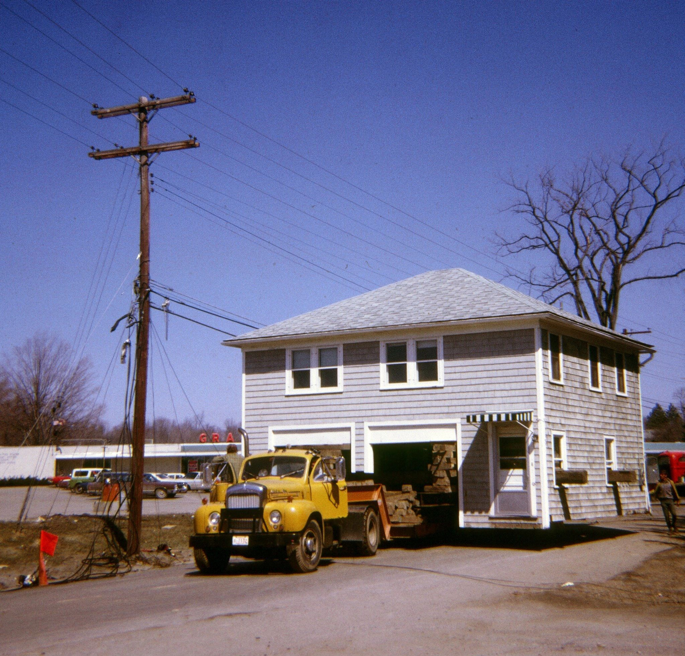
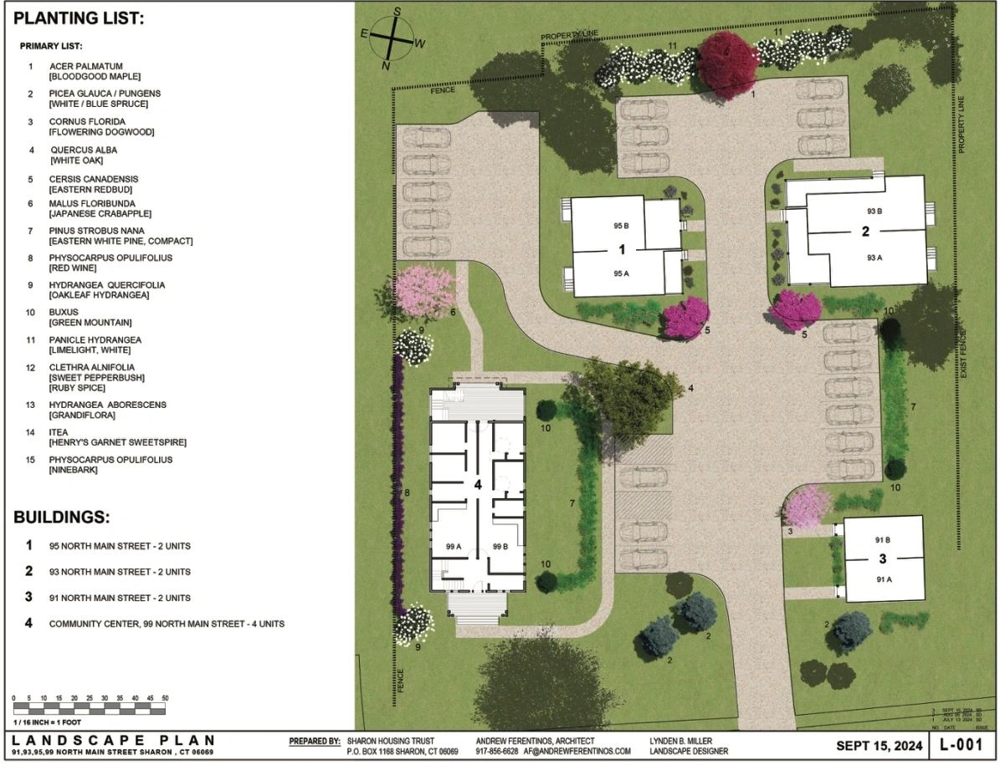
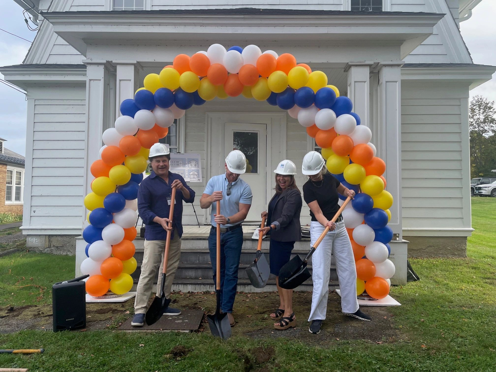

Preserve existing affordable housing
Keep homes at 91, 93 and 95 North Main Street affordable for the long term.

A place for everyone in Sharon
The Sharon Housing Trust creates and preserves affordable housing to help keep Sharon a vibrant, inclusive community.
Housing costs make it increasingly difficult for working families, older residents, and people with deep ties to Sharon to remain part of the community.
The Sharon Housing Trust works to create and preserve homes that remain affordable for the long term.
Learn About Housing in SharonLearn About Housing in Sharon
HUD CHAS, as cited in the Trust’s October 2026 presentation

Featured project · North Main Street
The 91–99 North Main Street project brings four buildings together as a renovated campus of ten affordable rental apartments. The former community center at 99 North Main Street is planned for conversion into four two-bedroom homes.
Explore Our WorkArchitectural rendering of proposed work at 99 North Main Street
Long-term affordability helps Sharon remain a place where neighbors, families, and local workers can build their lives. Explore Our Work
Keep homes at 91, 93 and 95 North Main Street affordable for the long term.
Adapt the former community center at 99 North Main Street into affordable homes.
Build a new home at 160 Silver Lake Shores Road.

North Main Street
The Trust acquired 91, 93 and 95 North Main Street in 2023 and pursued support for needed renovations.
Read about the project
99 North Main Street
The Trust proposed converting the historic building into four additional affordable rental apartments.
Read about the plans
Late 2025
The grant will support upgrades to 91, 93 and 95 North Main Street and conversion of 99 North Main Street.
Read about the projectA home for Sharon
Community support helps the Sharon Housing Trust create and preserve affordable homes for the long term.